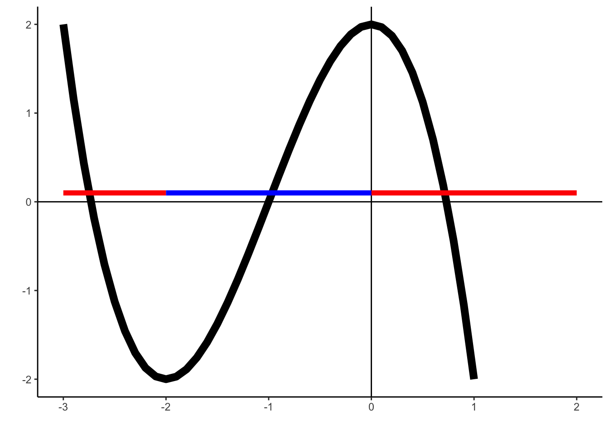

Answer the following questions to the best of your ability. Attempt exercises on your own first to make sure you fully understand the concepts. Feel free to work with anyone in the cohort after giving the problems a try!
Solutions: Derivatives Problem Set
Derivative Rules
- Explain how to find the derivative of the following functions. Be sure to explicitly denote which derivative rules (constant, multiple, sum, product, chain, etc.) you would use. For extra practice, have a try at solving them!
- \(\large f(x)=\sqrt{(x+3)}\)
We can use chain rule to compute this one, with the outer function being \(\sqrt(u)\) and ithe inner function being \(x+3\). We can compute each of these derivatives using the power rule. We obtain that<>
\[ f'(x)=\frac{1}{2\sqrt{(x+3)}} \]
- \(h(a)=\frac{\exp^{-a}}{a^2-5}\)
First we would use the quotient rule then to solve for the individual derivatives. The individual derivatives will require us to use the chain rule (for the numerator) and the power rule (for the denominator). We obtain that
\[ h'(a)=\frac{-(a^2-5)e^{-a}-(2a)e^{-a}}{(a^2-5)^2} \]
- \(g(t)=\left(\frac{5t^3+2}{2(t^2-2)}\right)^6\)
First chain rule. In the \(u\)-substitution we have to use the quotient and power rules.
\[\begin{align} g(t)&=\left(\frac{5t^3+2}{2(t^2-2)}\right)^6 \\ g(t)&=u(t)^6 &u=\frac{5t^3+2}{2(t^2-2)}\\ g'(t)&=6(u(t))^5\times u'(t) &\frac{du}{dt}=\frac{2(t^2-2)15t^2-4t(5t^3+2)}{(2(t^2-2))^2} \\ g'(t)&=6(u(t))^5* \frac{2(t^2-2)15t^2-4t(5t^3+2)}{(2(t^2-2))^2} \\ g'(t)&=6\left(\frac{5t^3+2}{2(t^2-2)}\right)^5\frac{2(t^2-2)15t^2-4t(5t^3+2)}{(2(t^2-2))^2} \end{align}\]
- On the graph, label all regions where the following statements are true:
- \(f'(x)=0\)
We have that \('f(x)=0\) at \(x=-2\) and \(x=2\), these are a minima and maxima respectively.
\(f'(x)>0\)
The function \(f(x)\) has a positive derivative whenever it is increasing, this happens over the interval (-2,0). This is indicated as the blue interval on the graph below.\(f'(x)<0\)
The function \(f(x)\) has a negative derivative whenever it is decreasing, this happens over the intervals \((-\infty,-2)\) and \((0,\infty)\). This range is indicated by the red intervals on the graph below.
d)\(f''(x)>0\)
The second derivative \(f''(x)\) is positive whenever the function is concave up (it has a U shape). The points at which the graph changes concavity are called inflection points. We can estimate the function is concave up whenever \(x<-1\).
- \(f''(x)<0\)
The second derivative \(f''(x)\) is negative whenever the function is concave down (it has an upside-down U shape). The points at which the graph changes concavity are called inflection points. We can estimate the function is concave down whenever \(x>-1\).
- Find the derivative of these equations
- \(f(x)=e^{x^2+3}\)
\[ f'(x)=2x e^{x^2+3} \]
- \(f(x)=\sqrt(2x)(x^3-4x+15)\)
\[ f'(x) =\frac{1}{\sqrt{2x}}(x^3-4x+15)+\sqrt{2x}(3x^2-4) \]
- \(f(x)=\frac{x^3+2x}{x-1}\)
\[ f'(x)=\frac{(x-1)(3x^2+2)-(x^3+2x)(1)}{(x-1)^2} \]
- Find the critical points of the following function and determine whether they are maxima or minima:
\[ f(x) = 2x^3-5x^2+3x-12. \]
To do this we neeed to first find the critical points by solving \(f'(x)=0\) and then use the second derivative test on the critical points we find to determine if they are a maxima or a minima. Computing the first derivative using the power rule we have that
\[ f'(x)=6x^2-10x+3=0 \]
Then, using the quadratic formula to solve this equation we get that the critical points of \(f(x)\) are \(x\approx 1.27\) and \(x\approx 0.39\).
Next, the second derivative is \(f''(x)=12x-10\), and evaluating this at the critical points we get that \[f''(1.27)>0 \ \text{ and } \ f''(0.39)<0\]
Therefore, based on the first and second order conditions, there are two optimas for this function at \(x\approx 1.27\) and \(x\approx 0.39\). Plugging these values into the second order derivative we can see that \(x\approx 0.39\) is a maximum and \(x\approx 1.27\) is a minimum.
Let’s solve the canonical Gordon-Schaefer fisheries production model. This model formed the basis of fisheries management for half a century and is still a widely used model. It starts by defining the change in the abundance or biomass of fish by the logistic growth equation:
\[\begin{equation} \frac{dB}{dt}=rB(t)(1-\frac{B(t)}{K}) \end{equation}\]
where \(B\) is biomass, \(t\) is time, \(r\) is the intrinsic growth rate, and \(K\) is the carrying capacity.
Next, fishers catch fish based on their effort \(E\) (constant), technological ability \(q\) (constant as well and also called the catchability coefficient), and the amount of fish \(B\). For simplicity, we use an easy multiplicative form:
\[ Y(t)=qEB(t) \]
This catch rate takes away from the growth of the fish stock, thus we can subtract it from the logistic growth equation 1.
\[\begin{equation} \frac{dB}{dt}=rB(t)(1-\frac{B(t)}{K})-Y(t) \end{equation}\]
a) Fishery managers are interested in finding the equilibrium level of biomass and harvest. We can set \(\frac{dB}{dt}=0\). Solve for the equilibrium biomass in terms of K,q,r,E.
Substituting \(Y(t)\) in \(\frac{dB}{dt}\) and solving for B we obtain: \[ \begin{align} 0&=rB(1-\frac{B}{K})-qEB \\ qEB&=rB(1-\frac{B}{K})\\ qE&=r(1-\frac{B}{K})\\ \frac{rB}{K}&=r-qE \\ B&=K(1-\frac{qE}{r}). \end{align} \]
b) Substitute the equilibrium biomass you found in (a) into the catch equation.
Making this substitution we obtain \[ \begin{align} Y&=qEB \\ &=qEK(1-\frac{qE}{r})\\ &=qEK-\frac{q^2E^2K}{r}. \end{align} \]
c) What effort leads to a maximum sustainable yield? Maximize the equation from b) with respect to effort \(E\).
Let’s take the derivative of the previous equation with respet to \(E\): \[ \begin{align} \frac{dY}{dE}&= \frac{d}{dE} qEK-\frac{q^2E^2K}{r}\\ &= qK-\frac{2q^2EK}{r}. \end{align} \]
To find the effort \(E\) that leads to the maximum yield we find the critical points: \[ \begin{align} qK-\frac{2q^2EK}{r} = 0 &\Rightarrow qK =\frac{2q^2EK}{r} \\ &\Rightarrow E^* = \frac{r}{2q}. \end{align} \]
d) Interpret what you found in c). What are the two variables that drive fisher harvest levels?
The amount of effort that leads to the most amount of catch is driven entirely by the rate of growth of fish stocks and the ability of fishers to catch them. If \(q\) catchability goes up, fishers become more efficient and need less effort to reach max harvest. Faster growing species allow for more growth and thus more effort to catch them.
e) Calculate what is the maximum sustainable yield by substituting the optimal harvest level into the harvest equation.
Doing this substitution we obtain that the maximum sustainable yield is \[\begin{align} Y_{\text{max}}=\frac{qrK}{2q}-\frac{q^2(\frac{r}{2q})^2K}{r}\\ Y_{\text{max}}=\frac{rK}{2}-\frac{rK}{4}\\ Y_{\text{max}}=\frac{Kr}{4}. \end{align}\]